Tradición, pasión y calidad en cada botella. Descubre nuestra historia y nuestros vinos únicos.
En Vinícola El Aguaje cada botella cuenta una historia única , desde la tierra donde crece la vida hasta el cuidado
artesanal que dedicamos a cada cosecha.
Sumérgete en nuestra pasión por el vino y déjanos llevar tu paladar a un viaje inolvidable a través de la excelencia enológica.
Desde su inicio en 2012 , Vinícola El Aguaje se ha dedicado a la creación de vinos excepcionales mediante un proceso de
elaboración meticuloso , donde la armonía y el equilibrio son valores primordiales.
Esta privilegiada ubicación nos brinda las condiciones climáticas perfectas para el cultivo de la vida permitiendonos
cosechar uvas de la más alta calidad.
Vinícola El Aguaje
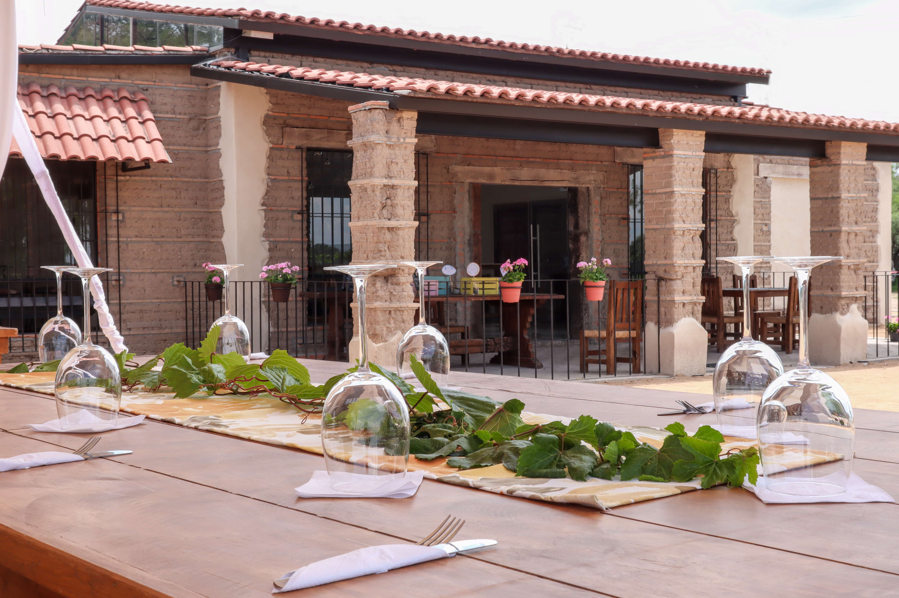
Visítanos y descubre nuestros vinos artesanales en un ambiente natural. Te esperamos para que vivas una experiencia única entre viñedos.
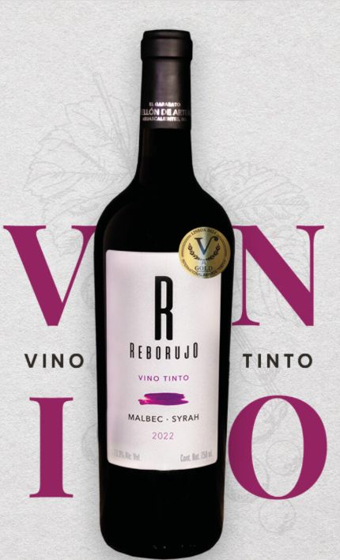
Origen: Pabellón de Arteaga , Aguascalientes, México.
Varietal : Malbec y Syrah.
Crianza: 12 meses en barrica de roble francés blanco.
Temperatura a servir: 16 a 18 grados centígrados.
Grado alcohólico: 13.3%
Notas de cata :
Aspecto:color rojo intenso con destellos violáceos.
Aroma:Aroma intenso a frutos rojos y negros y complementados por notas especiadas de vainilla y un ligero toque ahumado proveniente de la crianza en barrica.
Paladar :Es estructurado y equilibrado, con taninos sedosos y una acidez vibrante.
Mariaje:Se marida bien con carnes rojas asadas,estofados, pastas con salsas robustas y quesos maduros.
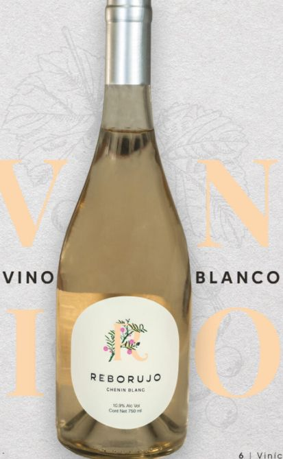
Origen: Pabellón de Arteaga , Aguascalientes, México.
Varietal : Chenin Blanc.
Crianza: Vino Joven.
Temperatura a servir: 16 a 18 grados centígrados.
Grado alcohólico: 10.9%
Notas de cata :
Aspecto:color amarillo pálido con reflejos verdosos brillante y limpio.
Aroma:Flores blancas como manzanilla, gardenias y acacia, con delicadas notas de cera de miel y un sutil toque de vainilla.
Paladar :Presenta una acidez alta, con presencia de notas florales y cítricas, y una permanencia media-alta que resalta su frescura y elegancia.
Mariaje:Ligero, fresco y equilibrado, con buena acidez y final persistente.ideal para paladares que buscan un blanco refrescante.
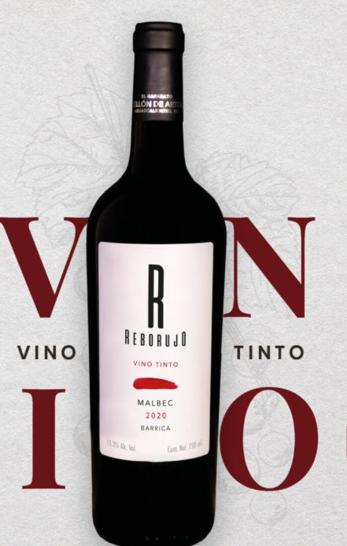
Origen: Pabellón de Arteaga , Aguascalientes, México.
Varietal :Malbec Monovarietal.
Crianza: 16 meses en barrica de roble francés blanco.
Temperatura a servir: 16 a 18 grados centígrados.
Grado alcohólico: 13.3%
Notas de cata :
Aspecto:Limpio rojo púrpura.
Aroma:Aroma intenso a madera fresca con notas herbáceas
Paladar :Sensaciones de vainilla y especias . De estructura robusta, taninos suaves y elegantes.
Mariaje:Acompaña muy bien a carnes rojas a la parrilla y de caza, quesos maduros y pastas con salsa de tomate.
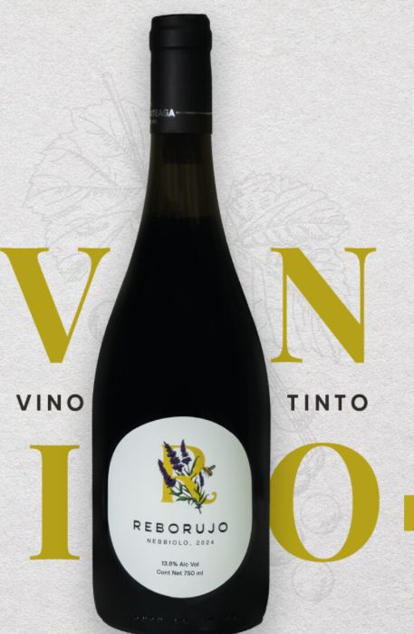
Origen: Pabellón de Arteaga , Aguascalientes, México.
Varietal : Nebbiolo.
Crianza: Vino Joven.
Temperatura a servir: 12 a 15 grados centígrados.
Grado alcohólico: 13.8%
Notas de cata :
Aspecto:color rojo rubí brillante de capa media.
Aroma:Intensos de frutos rojos como cereza, grosella y granada, acompañados de notas lácticas y especias sutiles como pimienta negra y clavo.
Paladar :Se confirman los frutos rojos, con una acidez media-alta , taninos suaves y un final medio que deja una sensación fresca y frutal en el paladar.
Mariaje:Perfecto para acompañar pastas,pizzas,carnes frias, quesos semimaduros y platillos especiados.
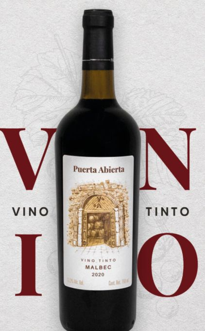
Origen: Pabellón de Arteaga , Aguascalientes, México.
Varietal : Malbec Monovarietal.
Crianza: 16 meses en barrica de roble francés blanco.
Temperatura a servir: 16 a 18 grados centígrados.
Grado alcohólico: 13.3%
Notas de cata :
Aspecto:Limpio rojo púrpura.
Aroma:Aroma intenso a madera fresca con notas herbáceas.
Paladar :Sensaciones de vainilla y especias. De estructura robusta taninos suaves y elegantes.
Mariaje:Acompaña muy bien a carnes rojas a la parrilla y de caza , quesos maduros y pastas con salsa de tomate.
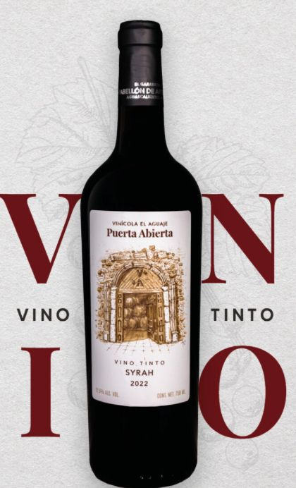
Origen: Pabellón de Arteaga , Aguascalientes, México.
Varietal : Syrah.
Crianza: 16 meses en barrica de roble frances blanco.
Temperatura a servir: 16 a 18 grados centígrados.
Grado alcohólico: 12.5%
Notas de cata :
Aspecto:Rojo profundo con matices violaceos y capa alta.
Aroma:Intensos de frutos rojos como cereza, grosella y granada, acompañados de notas lácticas y especias sutiles como pimienta negra y clavo.
Paladar :Se confirman los frutos rojos, con una acidez media-alta , taninos suaves y un final medio que deja una sensación fresca y frutal en el paladar.
Mariaje:Perfecto para acompañar pastas,pizzas,carnes frias, quesos semimaduros y platillos especiados.
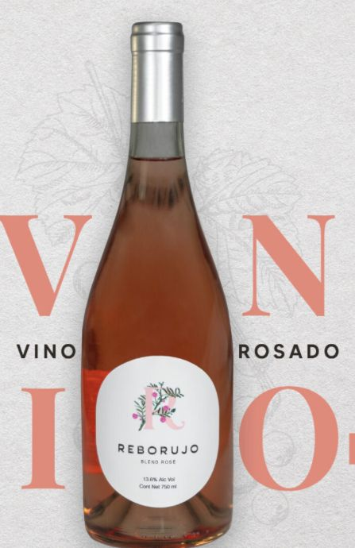
Origen: Pabellón de Arteaga , Aguascalientes, México.
Varietal : Merlot.
Crianza: Vino Joven.
Temperatura a servir: 16 a 18 grados centígrados.
Grado alcohólico: 13.6%
Notas de cata :
Aspecto:color rosa palido con destellos salamon.
Aroma:Notas frecas de fresa, frambuesa y durazno con toques florales y un sutil fondo citrico.
Paladar :Ligero y equilibrado con una acidez refrescante que resalta sus sabores frutales y un final suave y persistente.
Mariaje:Ideal para acompañar mariscos,sushi,ensaladas frescas,pastas ligeras y platos mediterraneos.
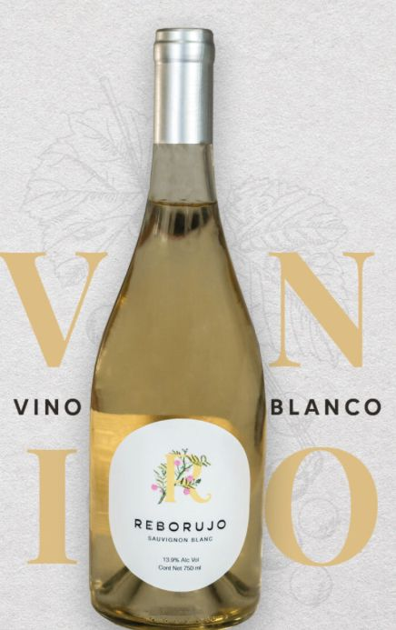
Origen: Pabellón de Arteaga , Aguascalientes, México.
Varietal : Sauvignon Blanc.
Crianza: Vino Joven.
Temperatura a servir: 12 a 15 grados centígrados.
Grado alcohólico: 13.9%
Notas de cata :
Aspecto:color amarillo palido con reflejos verdosos.
Aroma:Intensos aromas a citricos,maracuya,piña y hierba fresca con notas minerales.
Paladar :Fresco y vibrantes con acidez crujiente y sabores a lima,toronja y frutas tropicales. Final largo y refrescante.
Mariaje:Perfecto para acompañar mariscos,ceviche,ensaladas frescas,sushi y quesos de cabra.
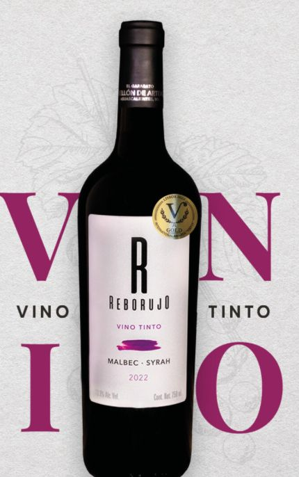
Origen: Pabellón de Arteaga , Aguascalientes, México.
Varietal : Malbec y Syrah.
Crianza: 12 meses en barrica de roble francés blanco.
Temperatura a servir: 16 a 18 grados centígrados.
Grado alcohólico: 13.3%
Notas de cata :
Aspecto:color rojo intenso con destellos violaceos.
Aroma:Aroma intensos a frutos rojos y negros y complementados por notas especiadas , de vainilla y un ligero toque ahumado proveniente de la crianza en barrica.
Paladar :Es estructurado y equilibrado con taninos seodosos y una acidez vibrantes.
Mariaje:Se marida bien con carnes rojas asadas, estofados,pastas con salsas robustas y quesos maduros.
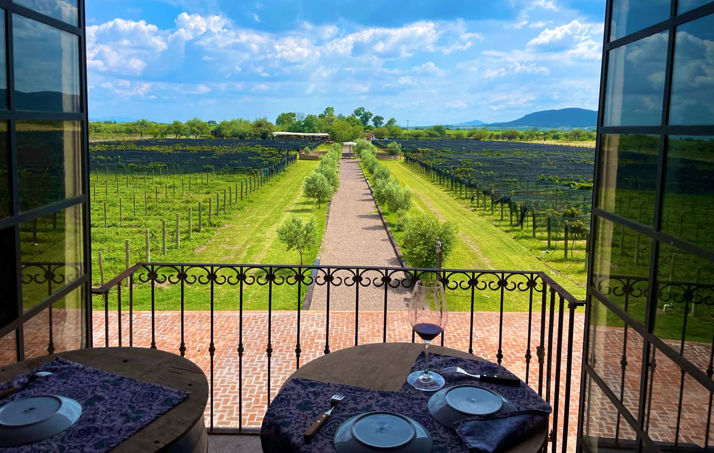
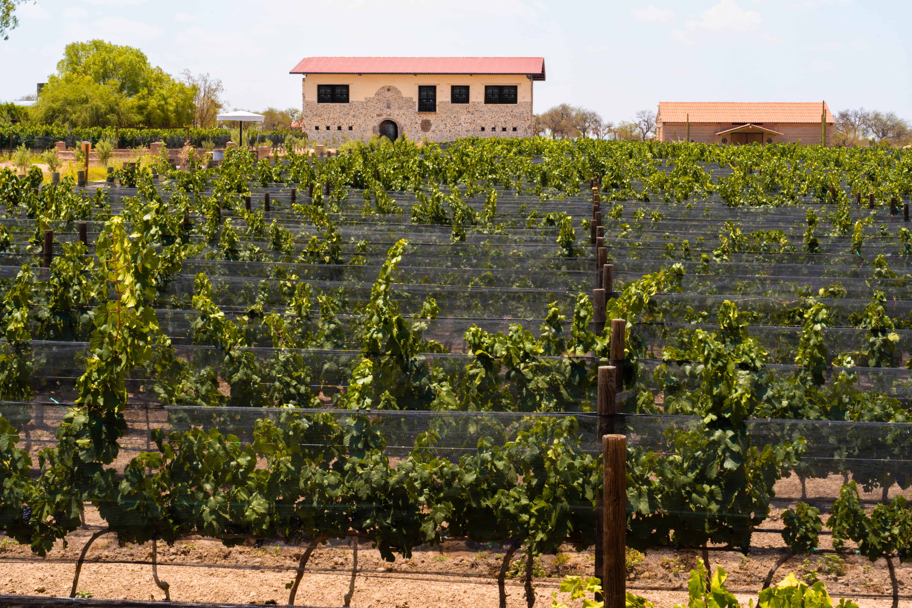
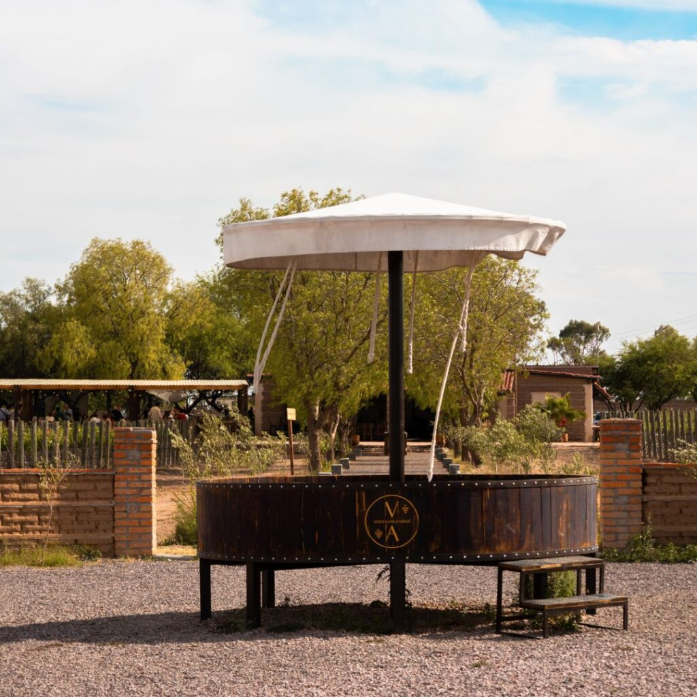
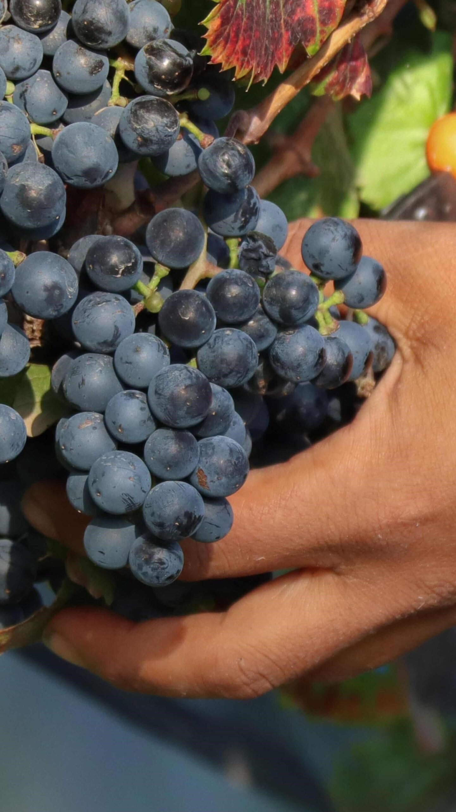
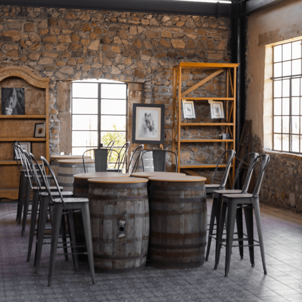